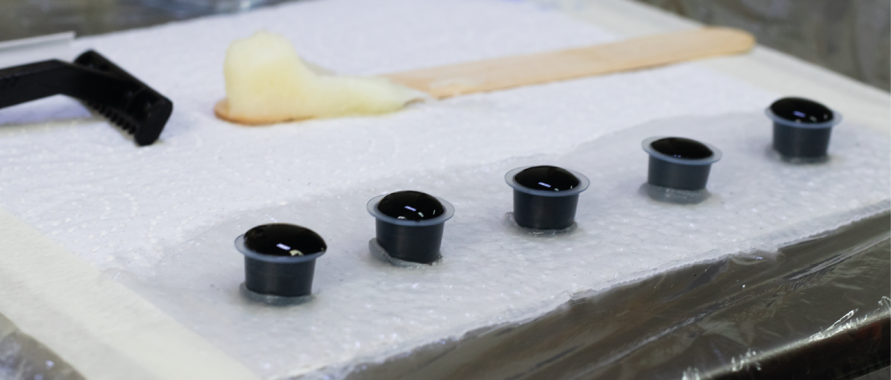

HOW TO
PREPARE
STAY HYDRATED
Your skin will be more flexible and will be able to heal faster and nicer
MOISTURIZE
SHAVE
EXFOLIATE
Remove the blemishes and impurities with a gentle exfoliator, for example, body scrubs or peeling
ARRIVE RESTED
AND RELAXED
EAT
BRING SOME
HEALTHY BITES
It’s never a bad idea to keep some snacks in your pocket, just in case you want to distract yourself from pain
HOW TO PREPARE
STAY HYDRATED
MOISTURIZE
SHAVE
EXFOLIATE
ARRIVE RESTED AND RELAXED
EAT
BRING SOME HEALTHY BITES
HYGIENE
FNT follow all the tattoo hygiene standards and safety practices.
We use a new, sterile and clean needles. Every package is always opened just before starting the tattoo.
All equipment is sterilized and kept in clean and dry condition. We wash our hands before and after the procedure and using gloves while tattooing is essential for us.
The working tables are disinfected after each tattoo. We cover everything with plastic covers before starting a new tattoo.
We want to be sure that all our clients feel safe and comfortable at our studio and with our cleanliness standards.
HYGIENE
FNT follow all the tattoo hygiene standards and safety practices.
We use a new, sterile and clean needles. Every package is always opened just before starting the tattoo.
All equipment is sterilized and kept in clean and dry condition. We wash our hands before and after the procedure and using gloves while tattooing is essential for us.
The working tables are disinfected after each tattoo. We cover everything with plastic covers before starting a new tattoo.
We want to be sure that all our clients feel safe and comfortable at our studio and with our cleanliness standards.
If you have a tattoo
already, check how to
take care of it
AFTERCARE
SHEET

If you have a tattoo already, check how to take care of it
AFTERCARE
PRODUCTS WE USE
Both of our artists use professional Cheyenne market leader tattoo machines which stands for
precision, safety, and hygiene at the same time they are extremely gentle on the skin.
For
every new tattoo session, we use sterile, high-quality Elite tattoo needles.
We care about our environment. All of our inks and tattoo care products are 100% vegan-
cruelty free.

Brands we use:
Black and Silverback (Greywash) inks – Dynamics
Color inks – Fusion
Cream for tattooing – Ink Booster – Natural ingredients – Made in Germany
Additional products:
Gloves – Unigloves Black Pearl,Powder-free
Stencil primer - Electrum
PRODUCTS WE USE
Both of our artists use professional Cheyenne market leader tattoo machines which stands for
precision, safety, and hygiene at the same time they are extremely gentle on the skin.
For
every new tattoo session, we use sterile, high-quality Elite tattoo needles.
We care about our environment. All of our inks and tattoo care products are 100% vegan-
cruelty free.
Brands we use:
Black and Silverback (Greywash) inks – Dynamics
Color inks – Fusion
Cream for tattooing – Ink Booster – Natural ingredients – Made in Germany
Additional products:
Gloves – Unigloves Black Pearl,Powder-free
Stencil primer - Electrum
P
R
O
C
E
D
U
R
E
S